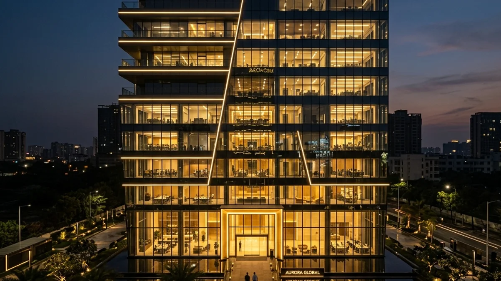
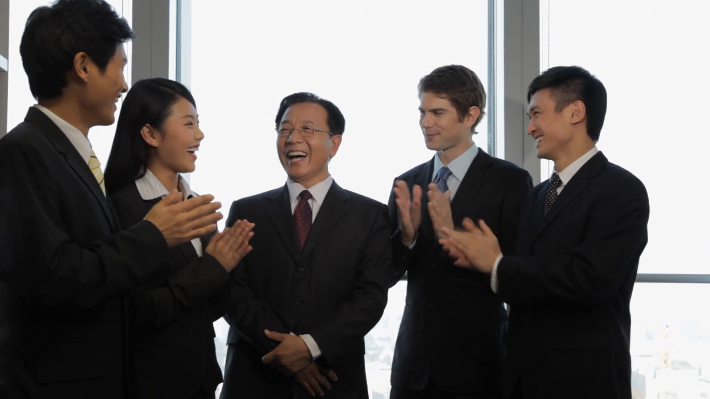

定义
商业权威
“影响力不仅仅是被听见，它更真实地体现在时代文化的变迁、千行百业的进化，以及商业领袖精准深远的决策之中。”

根脉相连，筑梦全球
作为 国际华人基金会 (International Chinese Foundation) 旗下的核心品牌，"全球十大华人" 自创立以来，始终以"弘扬华人精神、凝聚全球力量"为己任。
无论身处何方，全球华人正用智慧、勤奋与远见深刻地影响着世界的发展。"全球十大华人"旨在寻找这些在各行各业闪耀的华人榜样，向世界讲述他们的奋斗故事，传递华人的骄傲与荣光。
在国际华人基金会的坚实支持下，我们不仅在表彰卓越，更在编织一条连接全球华人的情感与价值纽带，共同见证华人力量在世界舞台上的璀璨绽放。
「全球十大华人」是依托于 国际华人基金会（Yayasan Keturunan Cina Antarabangsa / International Chinese Foundation） 全球数据网络建立的权威研究平台。自 2016 年法定成立以来（注册号：PPM-029-10-29042016），基金会始终秉持中立、客观的编辑原则，联合全球资深财经编辑团队，长期追踪全球华人商业领袖的代际传承、资本流向与创新突破。本平台所有榜单评选与深度洞察，均由基金会独立评审委员会提供全程学术与合规支持。

国际华人基金会 官方注册证书 (Registration No. PPM-029-10-29042016)
我们的使命
在全球十大华人评选平台，我们致力于发掘和标记现代经济的中流砥柱与时代标杆。我们的使命是构建一个卓越无双的全球商业生态，让那些超越纯粹财务盈利、并能够深度塑造全球话语体系的杰出企业成为舞台中心。
我们坚信，真正的领导地位必定是远大愿景、职业道德底线与不妥协的执行力的完美融合。我们的平台将永久性地记录那些不仅参与了各自行业进程，更以一己之力指引整个行业迈向下一个世纪的领航者。
思想创新魄力
孕育并孵化那些敢于通过实证成功与战略冒险，来验证甚至颠覆行业传统的创新生力环境。
社会价值引导
表彰那些明确履行自身作为社会架构建设者角色的企业，并持续坚守最高标准的企业公民精神准则。
系统级深远影响
衡量成功的标尺将不再局限于每个季度的财报收益，而是放眼于其对全球供应链体系与消费模式的长期革命性影响。

严苛透明的
全球十大华人研究方法论 (Global Research Methodology)
核心商业价值建模 (Core Value Modeling)
深度剖析连续三至五年的核心财务表现、市场占有率及波动性稳定性，以及研发创新的实际资金投入比率。
全球视野独家访谈 (Global Editorial Interviews)
直接与跨国企业首席执行长官（C-Suite）及关键职能条线核心员工对话，从内部视角全方位评估企业文化的凝聚力及战略蓝图的执行契合度。
行业影响力对标分析 (Peer Impact Benchmarking)
构建一个专属于高端产业内部的匿名行业反馈环路体系，邀请同业竞争对手客观评判候选企业在垂直赛道内的市场话语权及影响力声量。
立刻加入先锋梯队。
我们现已开始接受 2026 年度候选企业的正式入围申请。遵循最高名额入选标准，评审席位规模受到严格限制。